Ground truth (FEM) vs. GNN prediction
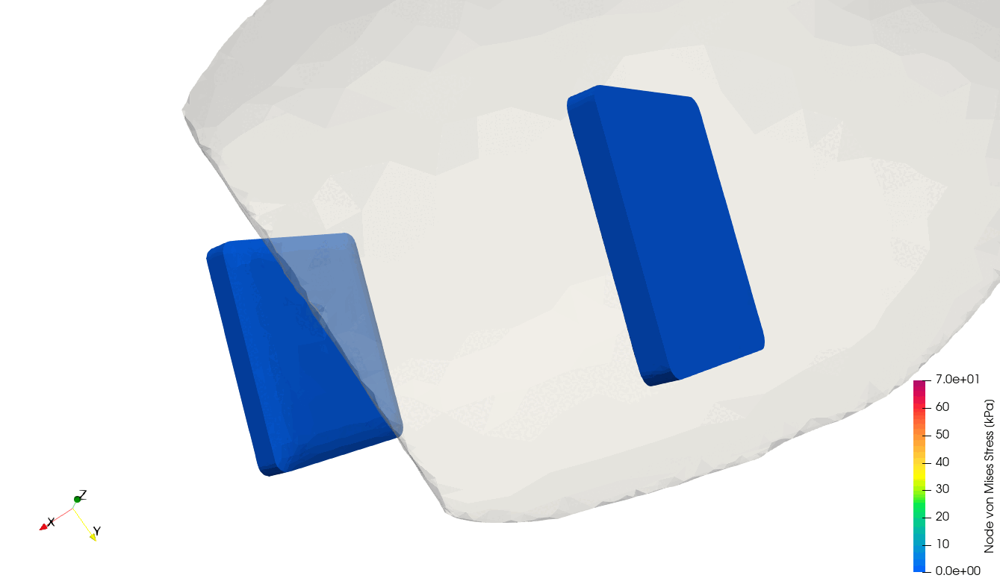
Ground Truth (FEM)
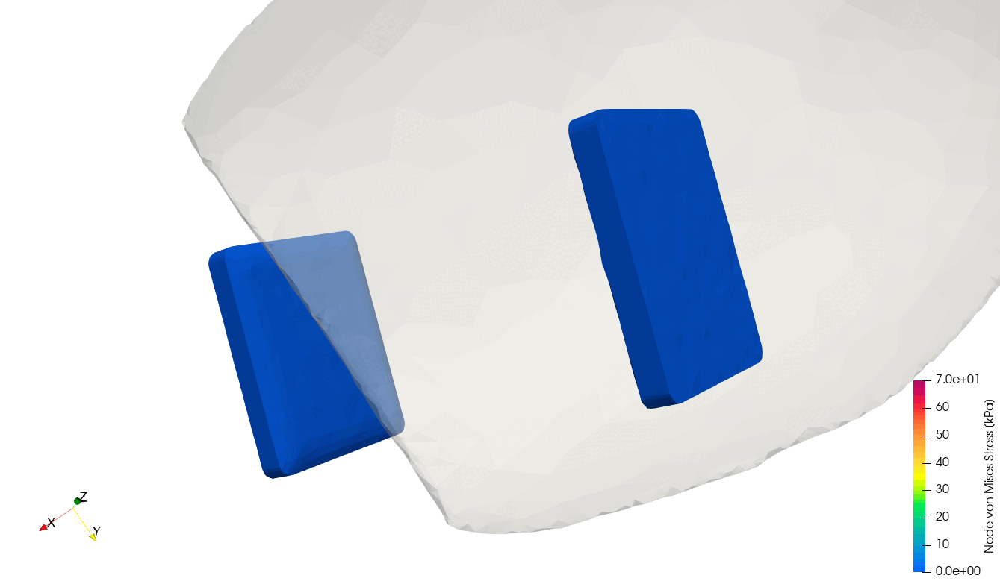
GNN Prediction
Apple
Ground Truth (FEM)
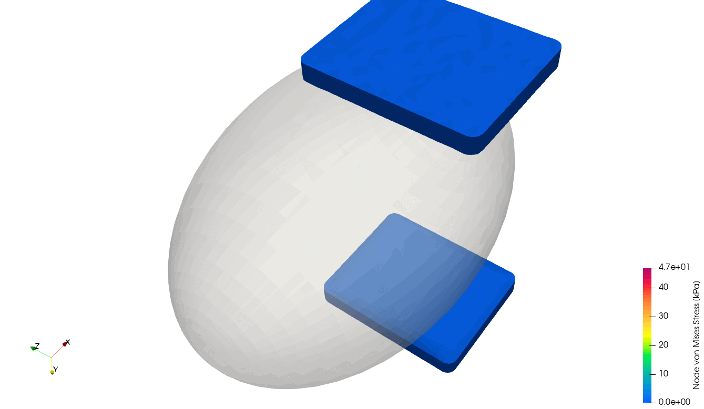
GNN Prediction
Ellipsoid
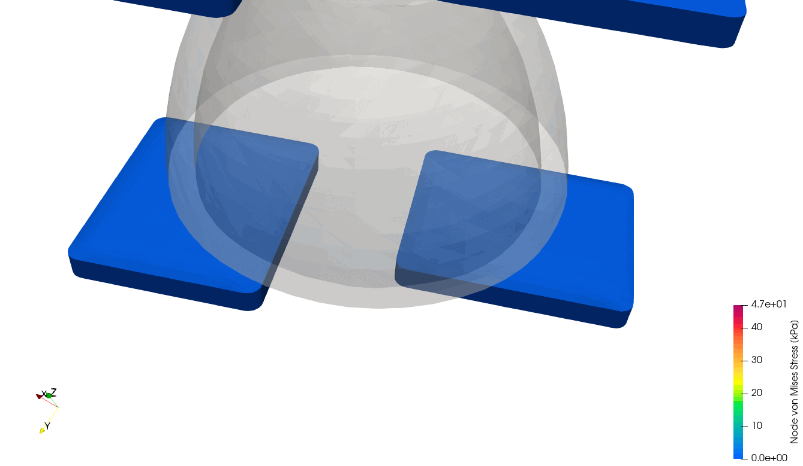
Ground Truth (FEM)
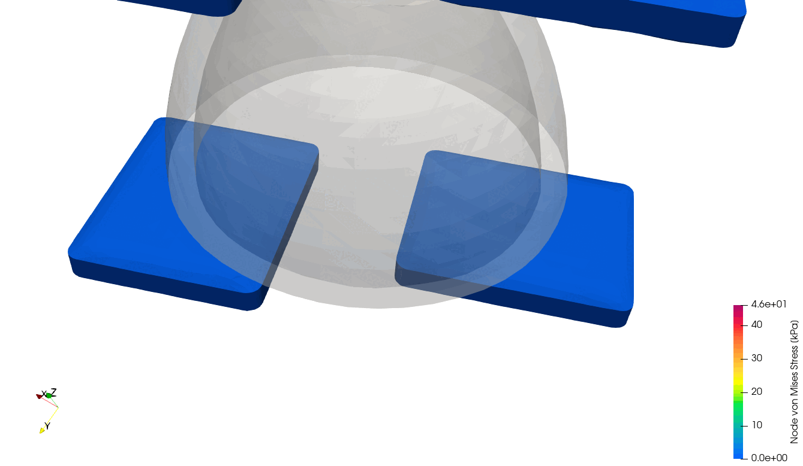
GNN Prediction
Lemon
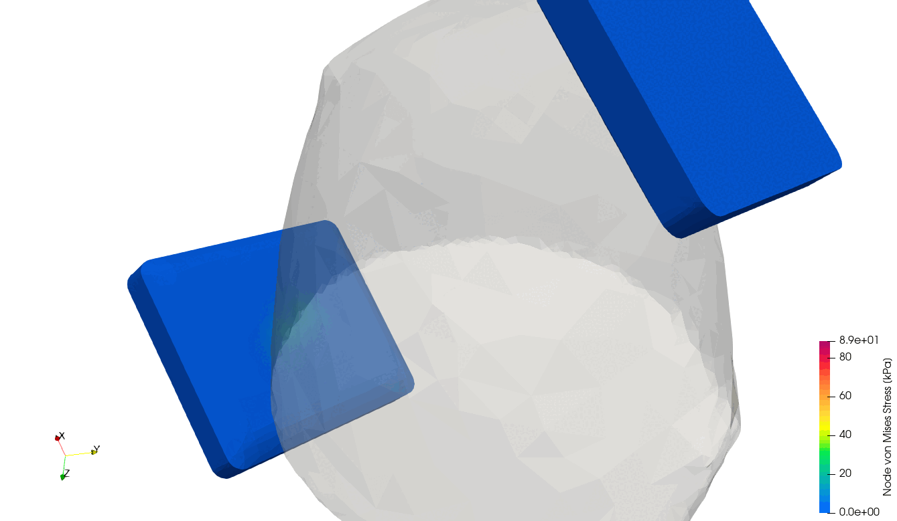
Ground Truth (FEM)
GNN Prediction
Cucumber
Tactile sensor deformation – Ground truth vs. GNN prediction
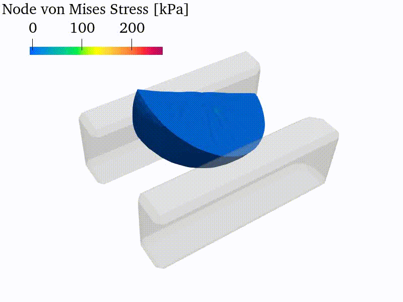
Ground Truth (FEM)
GNN Prediction
Lemon grasp (traj06)
Ground Truth (FEM)
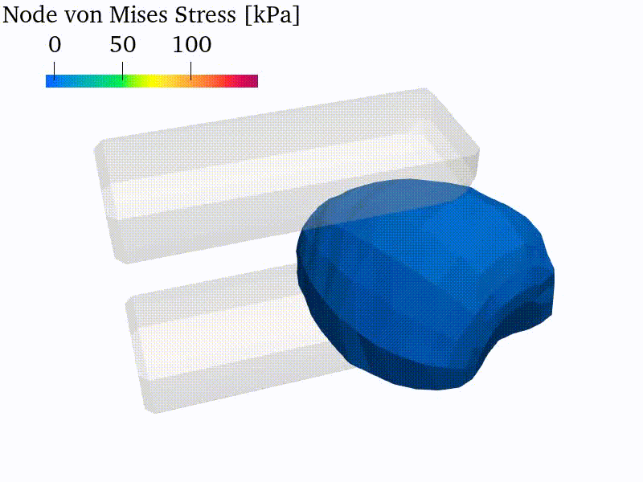
GNN Prediction
Strawberry grasp (traj05)
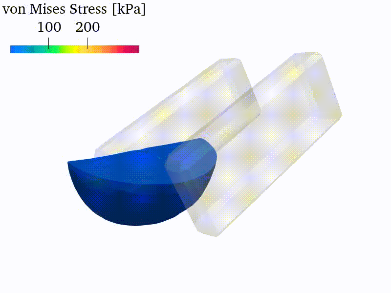
Ground Truth (FEM)
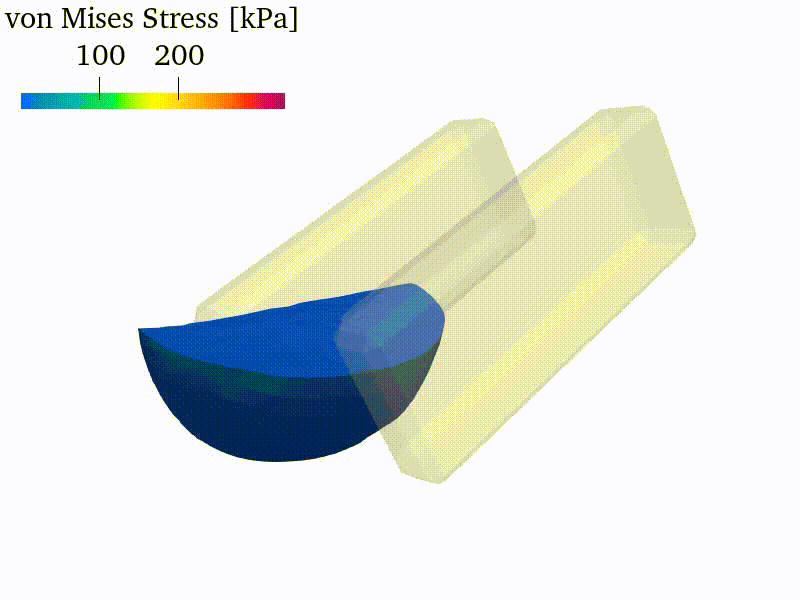
GNN Prediction
Lemon stress (traj26)
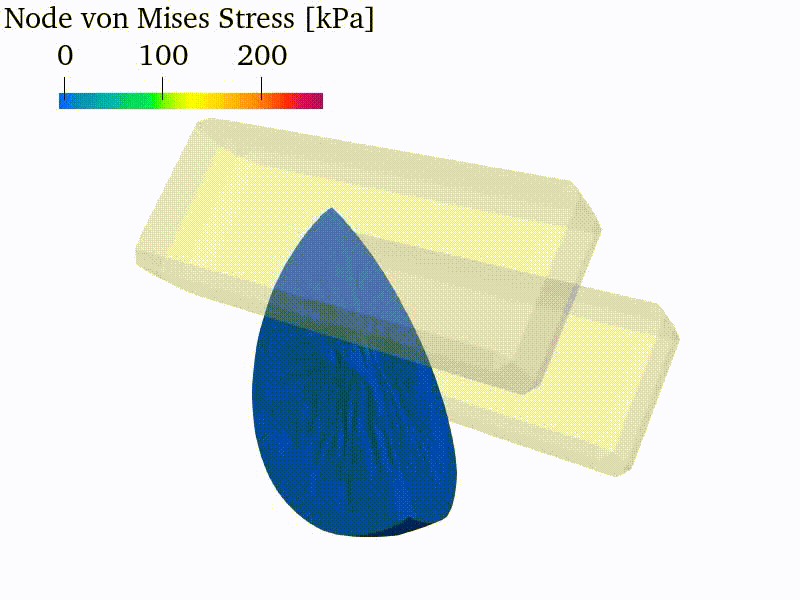
Ground Truth (FEM)
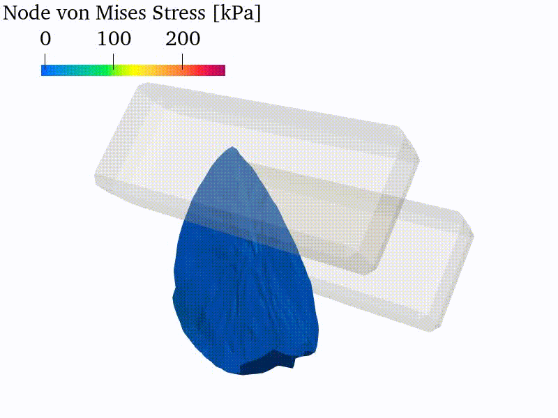
GNN Prediction
Lemon undeformed (traj07)
@inproceedings{
duret2025realtime,
title={Real-Time Simulation of Deformable Tactile Sensors in Robotic Grasping using Graph Neural Networks},
author={Guillaume Duret and Danylo Mazurak and Frederik heller and Florence Zara and Jan Peters and Liming Chen},
booktitle={IROS 2025 Workshop on Tactile Sensing Toward Robot Dexterity and Intelligence},
year={2025},
url={https://openreview.net/forum?id=9lTIfriAjP}
}
@inproceedings{
heller2025inductive,
title={Inductive Biases for Predicting Deformation and Stress in Deformable Object Grasps with Graph Neural Networks},
author={Frederik Heller and Alap Kshirsagar and Tim Schneider and Guillaume Duret and Jan Peters},
booktitle={IROS 2025 - 5th Workshop on RObotic MAnipulation of Deformable Objects: holistic approaches and challenges forward},
year={2025},
url={https://openreview.net/forum?id=eTLSEx020o}
}
@inproceedings{
duret2026softrobotics,
title={Real-Time Simulation of Deformable Tactile Sensors and Objects in Robotic Grasping using Graph Neural Networks with Inductive Biases},
author={Guillaume Duret and Frederik Heller and Danylo Mazurak and Alap Kshirsagar and Tim Schneider and others},
booktitle={9th IEEE-RAS International Conference on Soft Robotics (RoboSoft 2026)},
year={2026},
month={April},
address={Kanazawa, Japan}
}